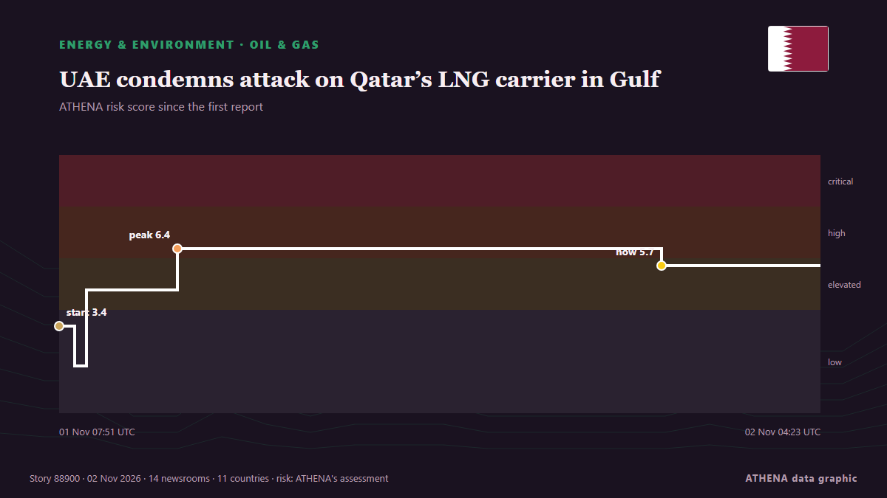

Нефть и газ
| 20 окт. | 0 |
|---|---|
| 21 окт. | 0 |
| 22 окт. | 0 |
| 23 окт. | 0 |
| 24 окт. | 0 |
| 25 окт. | 3 |
| 26 окт. | 2 |
| 27 окт. | 0 |
| 28 окт. | 0 |
| 29 окт. | 7 |
| 30 окт. | 3 |
| 31 окт. | 4 |
| 1 нояб. | 4 |
| 2 нояб. | 0 |
Заголовки приводятся на английском языке, как они были опубликованы.

UAE condemns attack on Qatar’s LNG carrier in Gulf
Qatar Gas Transport Company says no crew members injured, vessel remains safe and operational following Friday evening incident. из Anadolu Agency (English)
Tyrone toddler treated in hospital after being burned by firework
The incident happened in Co Tyrone as fireworks were thrown outside a petrol station. из The Irish News (Belfast)
Russia says drone hit 'industrial enterprise' near Moscow, Kyiv claims hit major refinery
Russia announced that a drone hit an industrial area near Moscow, while Ukraine claimed responsibility for targeting a major refinery in the region. из Arab News
Vietnam cuts gasoline tax to zero, prices fall from November 1
Vietnam has cut the special consumption tax on all types of gasoline to zero from November 1, 2026, bringing down retail gasoline prices as the government seeks to ease costs and curb inflation. из Tuoi Tre News
Gas prices in Europe nearly triple in October, exceeding $1,000
TEHRAN, Oct. 31 (MNA) – Natural gas prices in Europe nearly tripled in October, exceeding $1,000, media reported on Saturday. из Mehr News (English)
Fuel subsidies in Greece: Heating oil, diesel and petrol discounts extended through November 15
Government support will remain at the levels applied during the second half of October – The extension is expected to cost €35 million in the first half of November. из ProtoThema English
Azerbaijani oil surges past $126 per barrel as Iran tensions drive global prices higher
The price of Azerbaijan's Azeri Light crude oil has climbed to $126.16 per barrel in the European market, rising by $3.88, or 3.2%, amid renewed concerns over potential US military strikes against… из AzerNews
Tankers defy sharp escalation of Iranian attacks to keep crude oil flowing through Strait of Hormuz
Soaring freight rates are giving tankers a big financial incentive to run the gauntlet through the Strait of Hormuz. из CNBC World
UAE petrol prices set to change in November after fuel costs surge nearly 80% in 2026
UAE petrol prices for November 2026 are due to be announced after increases of up to 80% since January. из Arabian Business
Kirkuk Residents Demand Dissolution of Provincial Council
Kirkuk residents from all communities rallied on Oct. из Kurdistan24 (English)
ST LNG Project Offshore Texas Clears Key Regulatory Hurdle
QatarEnergy has developed a new strategy to further build its global LNG portfolio with long-term offtake from other suppliers to generate revenue if exports are disrupted in the Strait of Hormuz in… из Natural Gas Intelligence
ExxonMobil and Chevron top estimates for Q3 as Americans feel gas price pain
Business is booming for two biggest US oil companies, with both benefiting from higher prices and record production ExxonMobil and Chevron both reported better than expected quarterly results on… из The Guardian
New Jersey governor threatens to block Russian diesel shipments to US
Mikie Sherrill said US President Donald Trump is not doing anything to lower gasoline and diesel prices. из TASS (English)
Bodies Discovered After Rig Sinks Offshore Gabon
'An underwater remotely operated vehicle has located the bodies of three individuals', Borr Drilling revealed. из Rigzone
US touts role in Gulf oil exports as CENTCOM chief flies over Hormuz Strait
LONDON: The chief of US Central Command, Brad Cooper, flew over the Strait of Hormuz in a CH-47 Chinook helicopter on Sunday as the command said US forces had helped Gulf partners export more than… из Arab News
Equinor Doubles Estimate for Afrodite Gas Discovery
An appraisal well showed that the Afrodite discovery near the Kvitebjorn field on Norway's side of the North Sea potentially holds 77-180 million barrels of oil equivalent recoverable natural gas and… из Rigzone
Europe set to release 42 million barrels of oil for 'short-term relief'
Europe will release 42 million barrels of oil reserves into the market over the next three months as part of its commitment to ease prices, French Economy Minister Roland Lescure said on Thursday. из The National
NAFDAC secures five-year jail term for fake Goya oil manufacturer
….Court gives Aba businessman option of ₦5m fine By Chioma Obinna The National Agency for Food and Drug Administration and Control (NAFDAC) has secured the conviction of a businessman in Aba, Abia… из Vanguard
Ukraine pauses strikes on Russian refineries after US pressure: Report
Ukraine is ready to stop strikes on Russian oil refining infrastructure if Russia refrains from attacking our power grid. из Ukrinform (English)